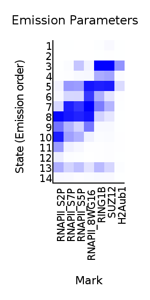
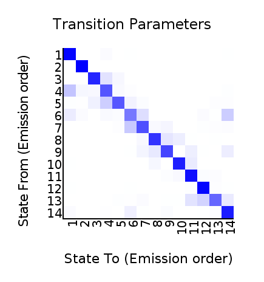
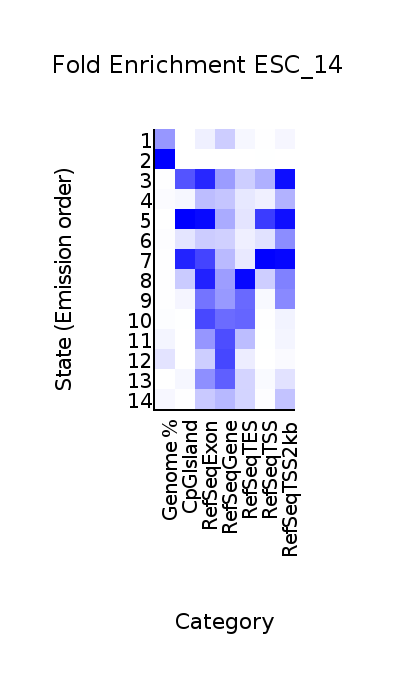
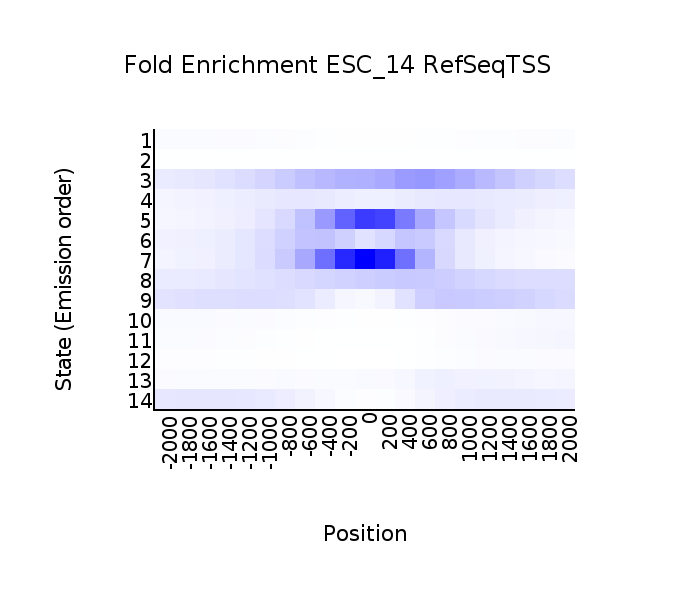
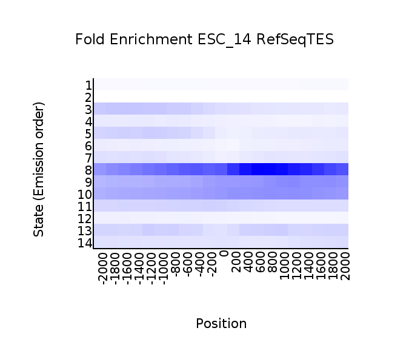

<center><h1>ChromHMM Report</h1></center>
Input Directory: binary_file<br>
Output Directory: model_14<br>
Number of States: 14<br>
Assembly: mm9<br>
Full ChromHMM command: LearnModel -p 12 binary_file model_14 14 mm9
<h1>Model Parameters</h1>
<br>
<li><a href="emissions_14.svg">Emission Parameter SVG File</a><br>
<li><a href="emissions_14.txt">Emission Parameter Tab-Delimited Text File</a><br>
<br>
<li><a href="transitions_14.svg">Transition Parameter SVG File</a><br>
<li><a href="transitions_14.txt">Transition Parameter Tab-Delimited Text File</a><br><br>
<li><a href="model_14.txt">All Model Parameters Tab-Delimited Text File</a> <br>
<h1>Genome Segmentation Files</h1>
<li><a href="ESC_14_segments.bed">ESC_14 Segmentation File (Four Column Bed File)</a><br>
<br>
Custom Tracks for loading into the <a href="http://genome.ucsc.edu">UCSC Genome Browser</a>:<br>
<li><a href=ESC_14_dense.bed>ESC_14 Browser Custom Track Dense File</a> <br>
<li><a href=ESC_14_expanded.bed>ESC_14 Browser Custom Track Expanded File</a><br>
<h1>State Enrichments</h1>
<h2>ESC_14 Enrichments</h2>
 <br>
<li><a href="ESC_14_overlap.svg">ESC_14 Overlap Enrichment SVG File</a><br>
<li><a href="ESC_14_overlap.txt">ESC_14 Overlap Enrichment Tab-Delimited Text File</a><br>
 <br>
<li><a href="ESC_14_RefSeqTSS_neighborhood.svg">ESC_14_RefSeqTSS_neighborhood Enrichment SVG File</a><br>
<li><a href="ESC_14_RefSeqTSS_neighborhood.txt">ESC_14_RefSeqTSS_neighborhood Enrichment Tab-Delimited Text File</a><br>
 <br>
<li><a href="ESC_14_RefSeqTES_neighborhood.svg">ESC_14_RefSeqTES_neighborhood Enrichment SVG File</a><br>
<li><a href="ESC_14_RefSeqTES_neighborhood.txt">ESC_14_RefSeqTES_neighborhood Enrichment Tab-Delimited Text File</a><br>
